Most of what you will ever do on this site is one of two things: add an inductee, or fix a few words on a page. This guide puts those first. Everything else is here for the day you need it.
Getting started
1What the site is made ofFour kinds of content, and which one you are working with
The site keeps four kinds of content, and knowing which one you are about to touch saves nearly every mistake in this guide.
| Content | What it holds | Where you edit it |
|---|---|---|
| Posts | Every individual inductee, plus news | The regular editor |
| Team Inductees | Teams honored as a group | The regular editor |
| Pages | Home, About Us, Museum and the rest | Elementor |
| Media | Every photo on the site | The media library |
Individual inductee pages all share one layout. So does every team page. You never build those pages — you fill in a record, and the layout draws it. That is why adding an inductee takes about two minutes and never involves Elementor.
The standing pages are different. Those were built in Elementor, and that is where the care is needed.
2Signing inGetting to the dashboard
- Go to the login page. Add /wp-admin to the end of the site address in your browser.
- Enter your username and password. Tick Remember Me on your own computer so you are not typing it every week. If your account is linked to Google, you can use Sign in with Google instead.
- Select Log In. You land on the Dashboard.
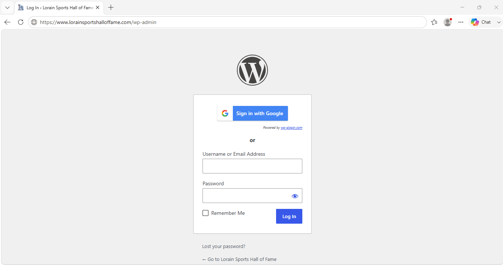
Forgot your password? Select Lost your password? under the form. A reset link goes to the email on your account. If it does not arrive within a few minutes, check your junk folder before asking for help.
3Finding your way aroundThe left menu, and the four items you will actually use
The dark column down the left side is the menu for the whole site. It is long. These are the four entries that cover nearly everything:
- Posts — individual inductees and news
- Team Inductees — teams
- Pages — the standing pages
- Media — photos and files
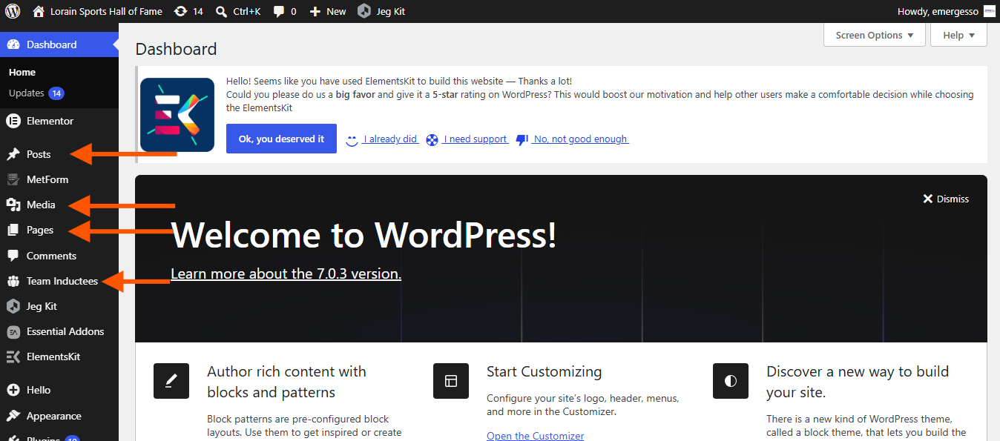
Any list screen — Posts, Team Inductees, Pages — works the same way. Hover over a row and a small set of links appears underneath it: Edit, Quick Edit, Trash, View. Quick Edit is useful when all you want is to fix a title or a date without opening the whole record.
The search box at the top right of a list screen searches that list only. On Posts, with 400-odd records, it is faster than paging.
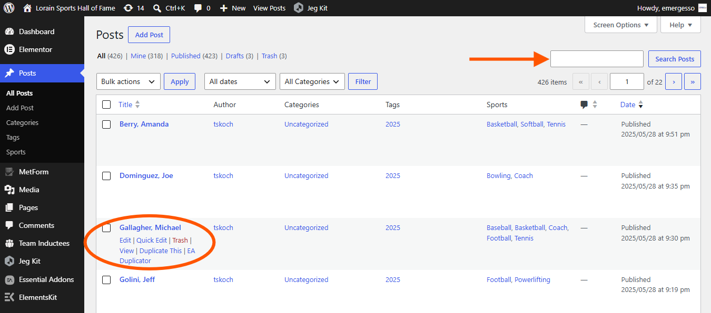
4Words used in this guidePlain meanings for the terms on screen
| Term | What it means here |
|---|---|
| Post | How an individual inductee is stored. News items are posts too. |
| Team Inductee | A separate kind of record, used only for teams. |
| Page | One of the standing pages — Home, About Us, Museum and so on. |
| Category | Marks a post as an inductee. There are only two, and Inductees is the one that matters. |
| Sports | Which sport or sports an individual competed in. Add as many as apply. |
| Tags | Where an individual's induction year is recorded. Type the year, nothing else. |
| Template | A shared layout. One template draws every individual inductee page on the site. |
| Elementor | The visual page editor. Used on the standing pages only — never for inductees. |
| Revision | An automatically saved earlier version of something you edited. |
Everyday tasks
5Adding an inducteeThe one you will do most
An individual inductee is a post. Fill in the record, then publish. Nothing here opens Elementor.
- Go to Posts, then Add Post.
- Type the name as the title, last name first. Every record on the site follows this — Berry, Amanda and Dominguez, Joe. Matching it keeps the alphabetical lists correct. Example: Doe, John.
-
Select the plus symbol, choose Heading.
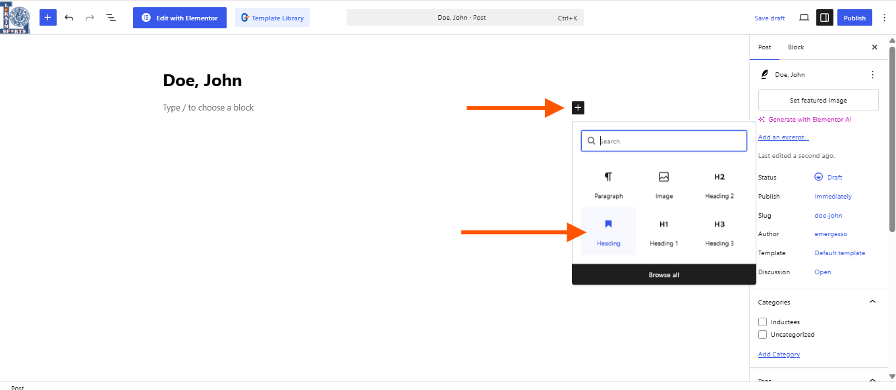
Select the image to view it full size. - Type the name as First Name Last Name in the heading editing area. Example: John Doe.
-
Start a new line by hitting the Enter key, select plus, choose Image, and either upload the photo or pick one already in the library.
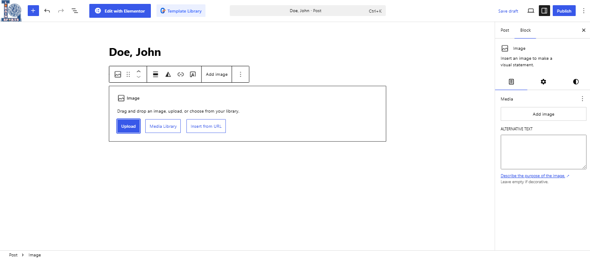
Select the image to view it full size. - Write the biography in the main editing area. Start a new line and type text. Plain paragraphs are fine. This is the text that appears on their page.
- Tick Inductees under Categories. Skipping this is the single most common reason a new inductee never appears in a list.
- Enter the induction year under Tags. Type the four-digit year, for example 2025, and hit the Enter key to apply it. Just the year.
- Choose the sport or sports. In the Sports box, type every sport that applies, separating them with commas or the Enter key. Several is normal — plenty of inductees played three.
- Select Publish. The page builds itself.
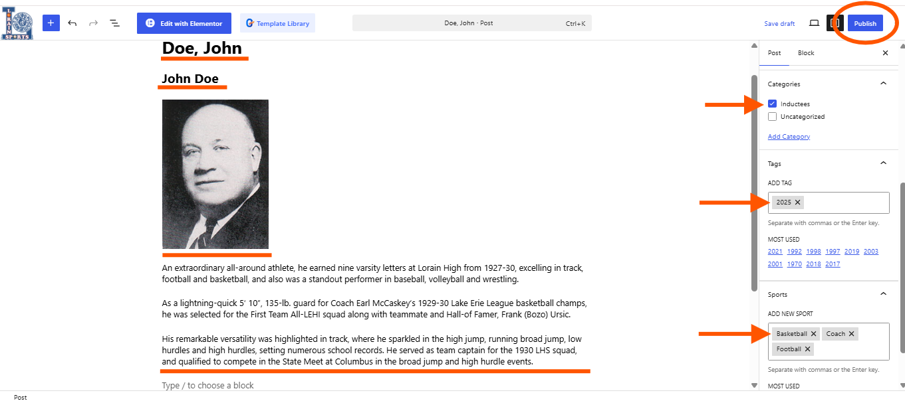
The year is a tag, not a field. It is the step people miss, because it does not look like a year field. If the year is missing, the inductee will not show up when someone filters by induction class.
Check your work. Select View Post after publishing. Name, photo, sports and year should all be on the page. If something is missing, it is missing from the record — go back and add it rather than editing the page.
6Adding a teamSimilar to an inductee, with two differences
Teams are kept separately from individuals and have their own menu entry.
- Go to Team Inductees, then Add New.
- Type the year and the team name. Include the year, school, and sport type in the name. Example: 2025 Lorain High School Softball Team.
- Select the plus symbol, choose Heading.
- Type the title of the post. It can be the same as the team name or different. Example: Lorain High School's 2025 Girl's Softball Team.
- Start a new line by hitting the Enter key, select plus, choose Image, and either upload the photo or pick one already in the library.
- Write the team's story in the main editing area.
- Select Publish.
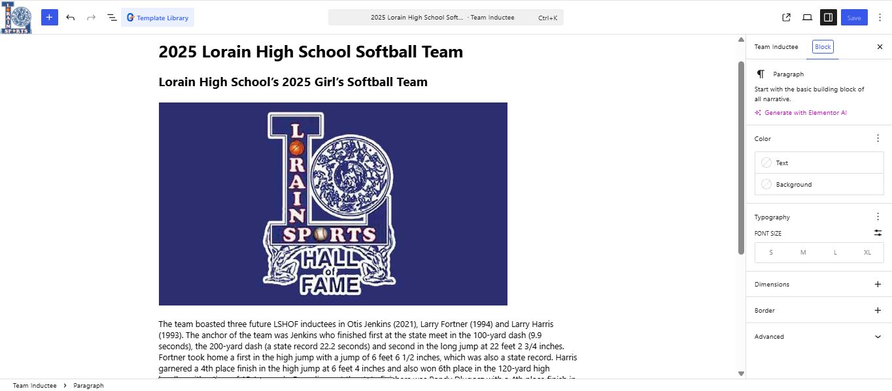
Two differences worth remembering. A team's year goes in its title, while an individual's year is a tag. And teams have no Sports box — the sport goes in the title or the story.
7Editing a pageChanging words and pictures in Elementor
The standing pages open in Elementor, a visual editor. You see the real page and change things directly on it.
- Go to Pages and hover over the page you want.
- Select Edit with Elementor. Not plain Edit — that opens the wrong editor and the page will look empty.
- Select the text or image you want to change. Its settings open in the panel on the left.
- Make your change in the left panel. The page updates as you type.
- Select Publish in the top right corner.
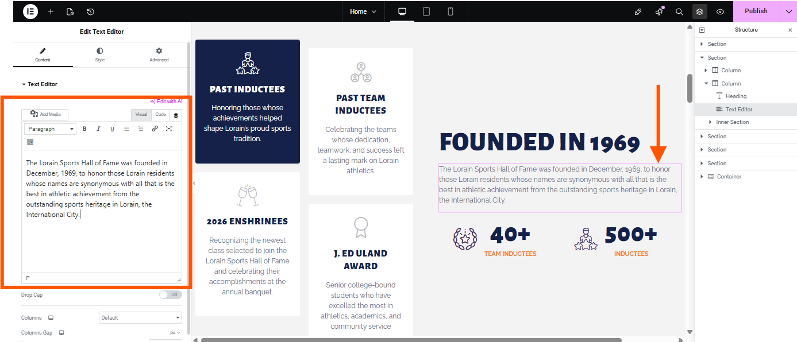
Change words and pictures. Leave the arrangement alone. If you drag something, delete a block, or change spacing or colors, the page can shift in ways that are not obvious until someone views it on a phone. Text and images are safe. Layout is not.
To undo. Select the History icon at the bottom left of the Elementor panel and pick any earlier point in the session. This works even after you have saved.
8Changing the menuThe links across the top of every page
- Hover over Appearance, then select Menus.
- Check that Main Menu is selected in the dropdown at the top.
- To add a link, tick a page in the box on the left and select Add to Menu.
- To reorder, drag an item up or down. Indent an item slightly to the right to make it a drop-down under the item above it.
- To rename, open the small arrow on the item and change Navigation Label. This changes the wording in the menu only, not the page title.
- Select Save Menu.
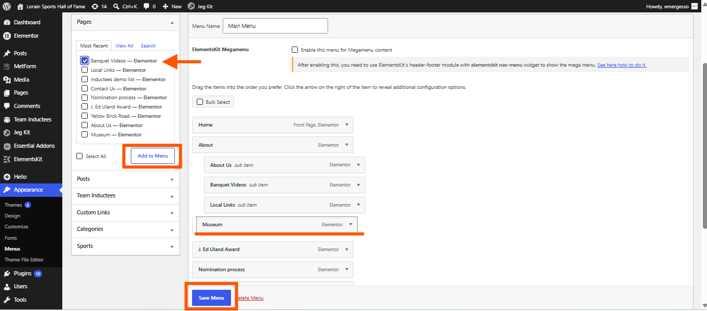
Keep it short. The menu has to fit across a phone screen. Adding a seventh or eighth top-level item usually means something else should become a drop-down.
9Adding photos to a galleryMuseum and Yellow Brick Road
Both of these pages use a filterable gallery — visitors can select a category to narrow what they see.
- Upload the photos first. Go to Media, then Add Media File, and drag or select the files. Doing this first makes the next step much quicker.
- Open the page with Edit with Elementor.
- Select the gallery. Its settings open on the left, with the existing photos listed. Make sure you are editing Filterable Gallery.
-
Select the Gallery Items dropdown to see a list of numbered items.
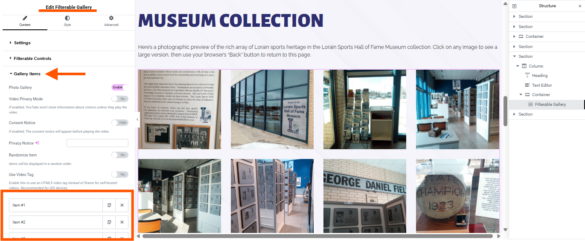
Select the image to view it full size. - Duplicate the last item by selecting the copy symbol to the left of the X.
- Replace the image. Scroll down until you can hover over the current image, select Choose Image, then upload or select an image from the library.
- Select Publish.
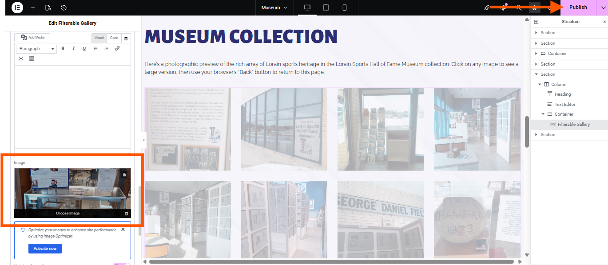
Always duplicate an item. This ensures all other settings stay exactly the same for each image.
10Adding a banquet videoAfter each year's induction
The Banquet Videos page holds around twenty videos, each one its own block on the page. New ones are added by copying an existing block rather than building a new one.
- Put the video on YouTube first and copy its address.
- Open Banquet Videos with Edit with Elementor.
-
Right-click an existing video block and choose Duplicate. You now have a copy directly beneath it.
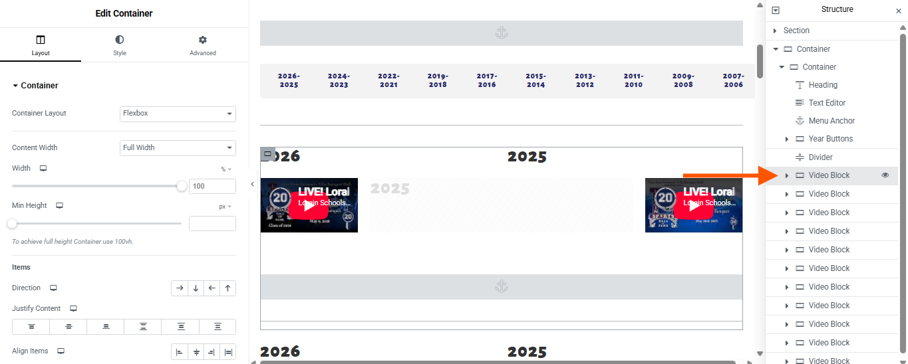
Select the image to view it full size. -
Select the top block, select the video, and paste the new address into the Link field in the left panel.
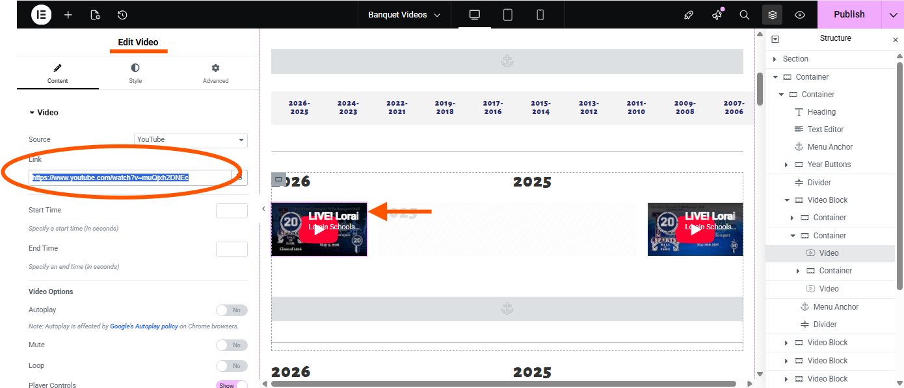
Select the image to view it full size. - Update the heading above it to the new year.
-
Select the menu anchor and update it with the new year.
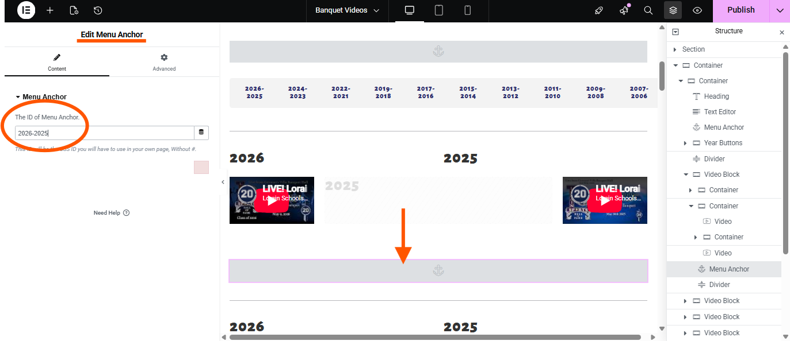
Select the image to view it full size. - Select Publish.
Update the new year on the mobile version too. It uses a different layout that must be updated separately.
Duplicating is safer than building. The copy already carries the right size and spacing. Starting from an empty block means matching all of that by hand.
Page by page
11HomeThe front page
Home introduces the Hall of Fame and points visitors toward the inductees, the museum and the nomination process. It carries a few counters and a set of tabbed sections.
Safe to change
- Any heading or paragraph
- The photographs
- The numbers in the counters, after an induction class is added
- The Events — it is a separate template, so it loads a new side panel
- The Inductees photographs — look at the right side panel labeled Structure. Each image is buried in a Column labeled Img Container. Select Style at the top of the left side panel to choose a new image
Ask first
- The tabbed section — its parts are linked, and removing one leaves an empty tab
- Anything above the first heading, which is part of the shared header
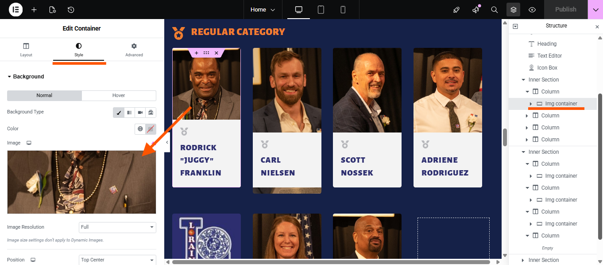
12About UsThe longest page on the site
About Us covers the history of the Hall and its board. It is a complex page, with separate blocks and a set of jump links that carry visitors to various parts of the site.
Edit this one carefully. Its size means a small mistake takes longer to find. Change one thing, select Publish, then view the page before changing the next thing.
Safe to change
- Board member names and titles
- Any heading or paragraph
- Buttons — be sure to update links if changing the name or landing page of a button
Ask first
- Removing a whole section — the jump links point at these, and a link to a deleted section goes nowhere
About Us in Elementor, with a board member block selected and the Structure panel visible on the right
13MuseumExhibits and gallery
The Museum page describes the collection and displays a filterable photo gallery. Adding photos is covered in section 9.
Safe to change
- Hours, address and admission wording
- Gallery photos and captions
- Section headings
The published Museum page, showing the collection text and the filterable gallery
14Yellow Brick RoadThe commemorative brick program
This page explains the program and shows a gallery.
Safe to change
- Gallery photos
The published Yellow Brick Road page, showing the program text and the gallery
15Nomination ProcessHow someone gets nominated
This page lays out the steps and criteria as a set of cards that flip over when a visitor hovers on them, with the detail on the reverse.
Safe to change
- The wording on either side of a card
- Deadline dates
- The nomination form link
Editing a flip card. Select the card and you will find separate Front and Back sections in the left panel. Both need updating when the wording changes.
A flip card selected in Elementor, with the Front and Back sections visible in the left panel
16J. Ed Uland AwardAward history and recipients
Mostly text, and the simplest page to edit.
Safe to change
- Everything on the page
The published J. Ed Uland Award page
17Local LinksRelated organizations
A set of link cards pointing to schools, leagues and other local organizations.
Safe to change
- Card wording, logos and web addresses
Adding a link. Right-click an existing card, choose Duplicate, then change the copy's wording, logo and address. Copying keeps the spacing right.
A link card selected in Elementor, with the right-click Duplicate option showing
18Contact UsThe form and the map
Contact Us holds a message form and a map.
Safe to change
- Address, phone and email wording
- Introductory text
Ask first
- The form itself — changing a field can stop messages reaching the right inbox
- The map, which is set to a fixed location
Where messages go. Submissions are emailed to the address configured on the form. If they stop arriving, check junk mail first, then contact Emerge — the cause is usually at the mail end, not the form.
The published Contact Us page, showing the message form and the map
Reference
19Leave these aloneThe four places where one edit changes everything
Nearly everything on this site is safe to experiment with. These four are not, because a single change reaches every page at once.
| Item | Why |
|---|---|
| LSHOF Header | The bar across the top of every page. Editing it changes all of them. |
| LSHOF Footer | Same, at the bottom. |
| Inductee templates | These draw all four hundred–plus inductee pages. One change redraws every one. |
| Colors and fonts | Found in Elementor's Site Settings. Changing a color here changes it everywhere on the site. |
Also worth staying out of: Plugins, Users, Tools and Settings. Nothing you need for day-to-day work lives there, and deactivating a plugin can take parts of the site down without warning.
If you end up in one of these by accident, leave without saving. Close the tab. Nothing is stored until you select Publish or Save.
20When something looks wrongThe usual causes, in the order to check them
A new inductee is not in the list
Open the record and check three things: Inductees is ticked under Categories, at least one sport is added, and the year is entered under Tags. A missing category is the cause most of the time.
The year is wrong or missing on an inductee
For an individual, the year is a tag. For a team, the year is in the title. Checking the wrong one is a common few minutes lost.
A page looks broken after you edited it
Open it with Edit with Elementor, select the History icon at the bottom left, and pick a point from before the change.
Every page changed at once
You edited the header, the footer, or a site-wide color. Use History in the same editor to step back. Tell Emerge either way, so someone can confirm nothing else moved.
You cannot sign in
Use Lost your password? on the login screen before asking for help — it resolves it most times.
When in doubt, do not delete. Editing keeps a history you can step back through. Deleting a section, a photo or a record removes it. If something looks like it should not be there, ask before removing it.
21Who to callSupport
For anything this guide does not cover, or anything that looks wrong and does not fix itself:
| Name | Company | |
|---|---|---|
| Leah Gerke | Emerge Inc. | lgerke@emergeinc.com |
It helps to include the page or the inductee's name, what you were doing, and a screenshot if you can take one.